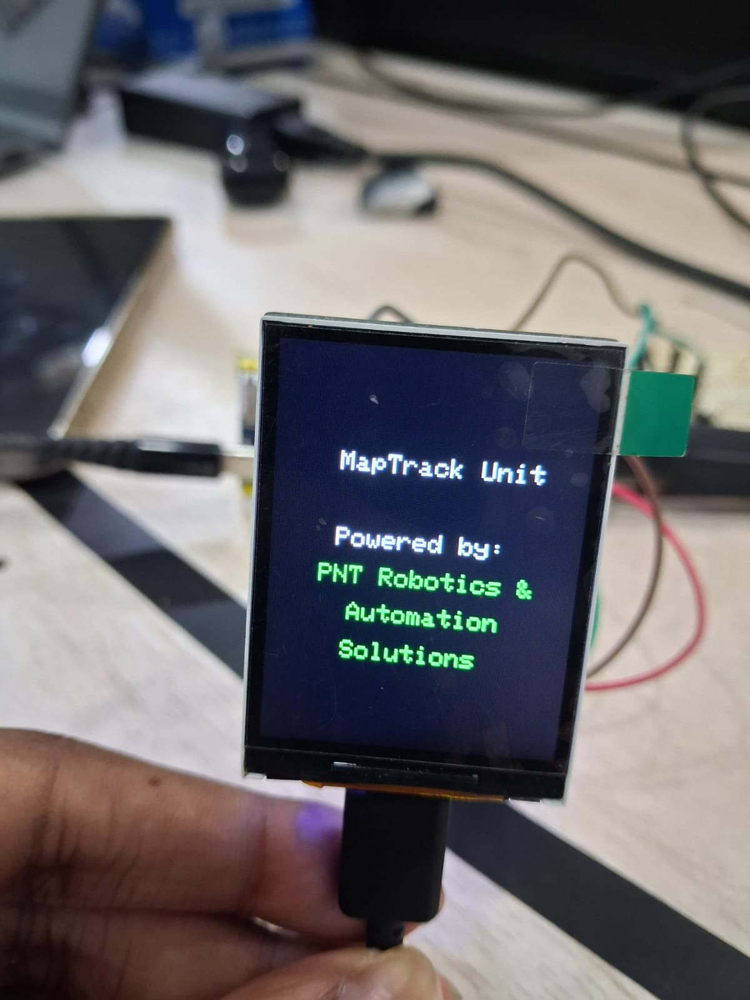
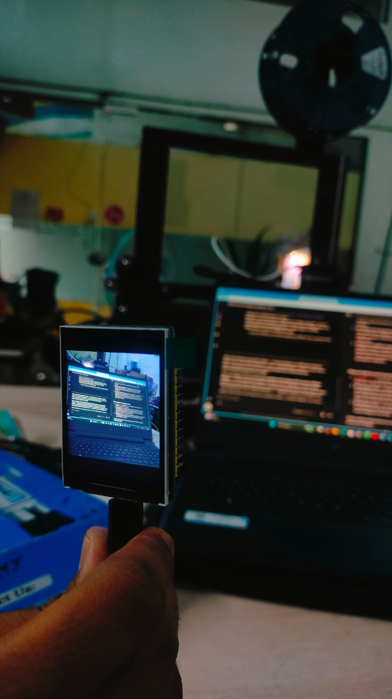

Employee Tracking System
An embedded tracking platform developed around real-time location acquisition, cellular communication, camera integration, display output and end-to-end hardware validation during the PNT Robotics internship.
Project overview
The Employee Tracking System was one of the main engineering tasks worked on during the PNT Robotics & Automation Solutions internship. The system combined embedded hardware and communication modules into a practical tracking unit rather than treating GPS, cellular communication, camera and display functions as isolated experiments.
The platform used an ESP32-S3 controller together with a SIM7600G-H cellular/GNSS module. The system was developed to acquire real-time location data, communicate over the cellular network and support image/data transmission. A display was also integrated for local system output and status information.
The work included hardware bring-up, firmware development, serial communication, debugging, module integration and end-to-end validation. The project therefore covered the full path from individual electronic modules to a working embedded tracking unit.
System architecture & technical focus
CONTROLLER & COMMUNICATION
Used an ESP32-S3 as the embedded controller and integrated the SIM7600G-H module for cellular communication and GNSS positioning.
GNSS / LOCATION
Worked with real-time GPS/GNSS data acquisition and the processing required to make location information available to the rest of the system.
CAMERA & DISPLAY
Integrated an OV5640 camera for image capture and a display for local user/system output.
FIRMWARE & DEBUGGING
Worked on firmware, UART communication, hardware bring-up, debugging and validation of individual modules and the complete system.
Work performed
- Contributed to the design and development of the Employee Tracking System during the PNT Robotics internship.
- Evaluated and integrated suitable hardware for the tracking platform.
- Worked with the ESP32-S3 controller and SIM7600G-H cellular/GNSS module.
- Implemented and tested real-time GPS/location data acquisition.
- Integrated the display and camera modules and validated their operation with the main controller.
- Worked on firmware required for acquiring location data and transmitting telemetry/data.
- Worked on image capture and image transmission as part of the system workflow.
- Performed component-level and end-to-end testing to identify integration issues.
- Debugged firmware and hardware communication problems during development.
- Optimized the integration of the controller, communication interface, display, camera and supporting hardware into a single tracking unit.
Technology stack
Project media


